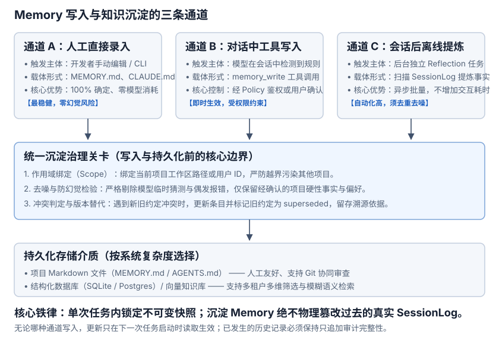
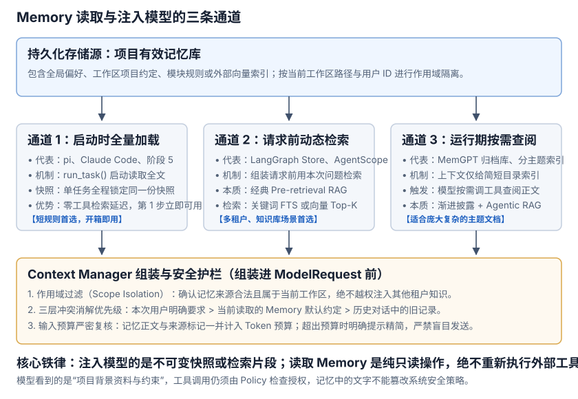

Memory: Select Knowledge Retained Across Sessions
1. What Should a New Session Know?
- User, session A: “This project uses uv. Use uv run for Python commands.”
- Model: “Understood.”
- (End session A and create session B.)
- User, session B: “How do I run the tests?”
Without earlier messages, the new session lacks that convention. Memory stores selected reusable knowledge separately and supplies it to later tasks. It does not change model parameters or load every conversation.
- Keep: Confirmed project facts, lasting preferences, and verified lessons, e.g., “This project uses uv”.
- Recheck: Test results, temporary errors, and specific line contents change as code evolves and cannot be treated as permanent facts; re-verify their latest state when referencing or debugging.
2. How Session, Memory, and Context Cooperate
- Session records what happened: Questions, responses, and tool results for inspection or continuation.
- Memory stores what is worth reusing: Selected facts or preferences with their source and applicable project or user.
- Context constructs the current input: Combine the question, selected history, and applicable memory within the full request budget.
A task that uses memory can be divided into the following steps:
- Application chooses scope: Identify allowed sources from the workspace or user configuration.
- Memory supplies content: Return text and sources, optionally finding relevant entries when there are many.
- Context checks input: Count memory together with other content before sending.
- Model uses the reference: Proposed tool calls still go through Tools and Policy.
Users can maintain memory directly, or an extraction process can propose content from Session. Automatic history scanning is optional. Separate model candidates from confirmed facts. Text claiming permission cannot replace Policy checks.
No memory and a failed read are fundamentally different results. The former allows execution to proceed normally, while the latter must be handled explicitly according to application policy. Never write try...except Exception: return None to silently mask failures as absent memory:
- No memory (expected clean absence): The file does not exist (catching
FileNotFoundError) or contains only whitespace. The loader returnsNone, and execution proceeds normally without injecting reference messages. - Failed read (unexpected system error): The file exists but access is denied (
PermissionError), encoding is corrupted (UnicodeDecodeError), a symlink escapes the workspace, or the path is a directory. Silently swallowing these errors causes project rules to vanish without notice. Handle them explicitly:- Fail-fast mode (used in this project): Raise the exception immediately before sending the first model request, stopping the task until the corrupted file or permission is fixed.
- Tolerant warning mode (e.g., pi): If memory is purely advisory, log an explicit warning to the console or telemetry and flag the run as degraded, rather than pretending nothing went wrong.
3. Storage Media & Data Structures: From Plain Text to Multi-Dimensional Namespaces
Designing Memory begins with two structural decisions: what is worth storing and what data structures and storage media to use:
- What to Store (Core Principle): Only keep reusable project facts and conventions (such as package managers or style rules) and verified troubleshooting lessons (symptoms, root causes, and fixes). Transient error logs, single lines of code, or ephemeral test runs should be re-inspected via tools on demand, not preserved as enduring memory; fixed multi-step execution workflows belong in a Skill.
Ordered from simplest to most feature-complete, four common storage formats and data structures prevail:
A. A Single Markdown File (e.g., <workspace>/MEMORY.md, CLAUDE.md)
Stored directly at the project workspace root (scoped to the current project) or in a user configuration directory (e.g., ~/.agent/MEMORY.md). Plain text is human-readable, easy to inspect or edit by hand, and trackable via Git for PR reviews. Ideal when a project has a compact set of core conventions.
B. An Index File Plus Topic Markdown Files (e.g., MEMORY.md + memories/*.md)
The main index keeps concise summaries and directory links, while detailed module notes or troubleshooting guides live in dedicated topic files. Useful when knowledge splits naturally by domain and a single file grows unwieldy.
C. Structured Tables & Hierarchical Namespaces (e.g., SQLite memories, LangGraph BaseStore)
Every memory is persisted as a structured record with metadata. Essential for multi-tenant platforms, multi-project isolation, programmatic concurrent access, and audit trails. A robust structured entry typically carries:
- Source: The originating session ID, user task, or reference document URL for traceability.
- Scope: Explicit boundaries (global user, team/org, or specific workspace) used as strict query filters.
- Status: Active (
active), replaced (superseded), or deleted (deleted) to prevent pulling obsolete rules. - Confirmation: Distinguishes user-verified facts from model-proposed candidates; unconfirmed model guesses must never act as hard constraints.
D. Vector Indexes & Hybrid Retrieval Stores (e.g., SQLite FTS + Embeddings)
Layers full-text inverted indexes and semantic embedding vectors on top of structured entries. Helpful when entries number in the thousands and phrasing diverges from stored text, at the cost of embedding computation, chunking, and retrieval tuning.
4. Core Mechanisms: Write Pipelines (Maintenance & Extraction) and Read Pipelines (Retrieval & Injection)
With data structures defined, an Agent must establish two operational pipelines: how knowledge is written and preserved (Write Pipeline) and how knowledge enters model context (Read Pipeline). Note that storage media and read/write execution actors are orthogonal choices.
4.1 Write Pipeline: How Is Knowledge Persisted?
Writing memory can be human-driven, model-driven, or automated in the background. Across Markdown and databases alike, writes follow three main channels:

- Channel A: Direct Manual Editing & CLI Commands (Most Reliable, Zero Hallucination): When a user confirms a lasting convention, they edit
MEMORY.mddirectly or execute/memoryin the CLI. Note: A model verbally agreeing “Understood, I'll remember that” in chat only appends toSessionLog—it never silently modifies the physical memory file. - Channel B: In-Conversation Tool Calls by the Model (Instant, Governed by Policy): When a user instructs “remember this constraint”, the model emits a
memory_writetool call, which persists only after passingPolicychecks or explicit user consent. - Channel C: Post-Session Offline Reflection (Automated, Requires Denoising): After a task or session completes, a background reflection task scans
SessionLog, extracts reusable facts, and writes them in batches without blocking active user interaction. Guardrails must prevent saving model hallucinations or transient errors as facts. - Unified Persistence Governance Gate: All channels must pass three checks before disk write: Scope Binding (restrict to project/user ID), Denoising (strip transient errors), and Conflict Replacement (mark superseded versions and record trace metadata).
4.2 Read Pipeline: How Does Knowledge Enter Model Input?
Saved knowledge must be assembled into model prompts at the appropriate moment to take effect. Three primary retrieval channels exist:

- Channel 1: Full Load at Task Start (Default for Short Files, Zero Tool Overhead, Non-RAG): At the start of
run_task(), the harness readsMEMORY.mdin full, andContext Managerinjects it as reference messages. It requires no preliminary tool calls from the model, though every request incurs token usage for the memory text. Best suited for short project rules under dozens of lines. - Channel 2: Dynamic Per-Request Retrieval (Classic Passive Pre-retrieval RAG, Best for Large Stores):
- Technical Essence: Standard Retrieval-Augmented Generation (Pre-retrieval RAG) applied to agent memory.
- Execution Mechanism: Before assembling each request, the outer framework filters by tenant/project scope, runs keyword search (FTS/BM25) or vector similarity (Embedding Top-K) against the user query, and injects only the most relevant memory snippets into the prompt.
- Interaction Characteristic: Passive for the model, zero tool round-trips. The system quietly handles retrieval before calling the model, ideal for large multi-tenant knowledge bases with independent rule items.
- Channel 3: On-Demand Tool Query by the Model (Progressive Disclosure + Agentic RAG, Best for Large Topic Docs):
- Technical Essence: Combines Progressive Disclosure information architecture with Tool-Based Retrieval (Agentic RAG).
- Execution Mechanism:
- Tier 1 (Lightweight Table of Contents): The initial prompt injects only a compact topic outline or index (e.g. available rule modules), consuming minimal tokens so the model knows what knowledge exists.
- Tier 2 (On-Demand Retrieval via Tools): When the model encounters domain-specific questions mid-run, it autonomously invokes
read_memory(topic)for targeted reading, or formulates precise search queries forsearch_memory(query)to trigger underlying full-text or vector recall.
- Interaction Characteristic: Active model-driven exploration, multi-hop capable. The model decides when, where, and what to search, refining queries when initial hits are insufficient. Ideal for complex architectural guides and extensive documentation.
4.3 Three Core Engineering Rules for Read/Write Harmony
- Rule 1: Lock an Immutable Snapshot Within a Task: If memory files shift mid-run, Step 1 and Step 2 will observe conflicting rules, causing hallucination. Edits take effect on the next task; the active task remains pinned to its startup snapshot.
- Rule 2: Enforce a Three-Tier Conflict Resolution Precedence: When rules collide, do not leave it to model chance. System instructions must declare: Current explicit user request > Currently loaded Memory default > Outdated default in past session history.
- Rule 3: Stopping Injection vs. Rewriting History: Deleting a memory means stopping automatic injection into future tasks. It does not—and must not—rewrite or erase past exchanges recorded in
SessionLog.
5. Memory Architectures Across Mainstream Agents: A Comprehensive Comparison
Different Agent systems adopt starkly different Memory architectures based on their operational environment, interaction goals, and memory lifecycles. Below is a systematic breakdown of five representative architectural paradigms grounded in pinned open-source code and official engineering mechanisms:
5.1 Paradigm 1: File Conventions & Hierarchical Directory Discovery (pi / Claude Code / Cursor)
This is the predominant and most lightweight approach for coding agents. Its core principle is: store knowledge directly in plain-text files without external databases, relying on OS directory tree hierarchies for rule inheritance and automatic discovery.
- Storage Medium and Multi-Tier Scopes:
- Global User-Level: Kept in the user home directory (e.g.,
~/.claude/CLAUDE.mdor~/.pi/agent/), capturing universal developer preferences across all projects (e.g., “answer in concise style”, “use TypeScript strict mode by default”). - Project Repository-Level: Kept at the workspace root (e.g.,
CLAUDE.md,AGENT.md,.cursorrules), defining project-wide build commands, test workflows, and architectural boundaries. - Subdirectory & Path-Level: Kept in module folders (e.g.,
.claude/rules/*.mdor.cursor/rules/*.mdc), activated dynamically via glob matching only when touching corresponding files.
- Global User-Level: Kept in the user home directory (e.g.,
- Discovery and Loading Mechanics (pi Source Analysis):
In pi,
DefaultResourceLoaderin resource-loader.ts recursively scans parent directories:- Upward Discovery: Starting from
cwdup through parent folders, combined with the globalagentDir, it collects all context files into{ path, content }pairs, logging warnings on read errors without crashing. - System Prompt Construction: In system-prompt.ts,
buildSystemPrompt()formats collected files into a dedicatedprojectContextsection inside the system prompt.
- Upward Discovery: Starting from
- Engineering Practice (Claude Code):
Claude Code uses
CLAUDE.mdfiles and provides a/memorycommand to view and edit active memory in place. Newer versions also support prompting users to save verified conventions into project memory subdirectories (.claude/) upon detecting recurring project patterns. - Trade-Offs and Ideal Use Cases:
- Strengths: Highly transparent, zero external database dependencies, and natively trackable via Git for diffs, commits, and PR reviews.
- Costs & Limitations: Lacks semantic retrieval. As files expand, injecting full text into system instructions consumes significant input token budget.
5.2 Paradigm 2: Middleware Interception & Decoupled Storage Backend (Deep Agents)
When running an agent on a personal computer (e.g., local development with Cursor or Claude Code), the local disk is permanently available, making it straightforward to read ~/.claude/CLAUDE.md. However, in cloud-native, multi-tenant, or containerized sandbox environments, underlying runtime characteristics change fundamentally:
- Why Cloud Runtimes "Cannot Assume Local Physical Files":
- Ephemeral Containers (Stateless Execution Nodes): For security and elasticity, Docker containers or Kubernetes Pods hosting agents are ephemeral. Once a task terminates, the container and its scratch disk are destroyed, losing any local files.
- Multi-Node Request Drifting: A user's first prompt may run in Container A, while a follow-up prompt seconds later is routed to Container B. Container B cannot access Container A's local filesystem.
- Multi-Tenant Isolation and Security: A single host server may sequentially handle tasks for different enterprise tenants; storing memories as plaintext files on local disk risks cross-tenant leaks.
- Architectural Solution: Complete Separation of Compute and Storage:
The runner node focuses purely on workflow orchestration and compute (a "stateless runner"), while memory data is persisted in a centralized remote store (e.g., Redis, PostgreSQL, or S3-compatible object storage). Deep Agents demonstrates this standard architecture by abstracting memory into lifecycle middleware with pluggable storage backends:
- Core Abstraction and Lifecycle Hooks:
Deep Agents defines
MemoryMiddlewarein memory.py, hooking into agent execution:- Explicit Source Declaration: The middleware receives a list of source paths (
sources) and a storage abstraction (backend), which can be local disk, an in-memory mock, or cloud object stores (e.g., S3). - Pre-Execution Fetch (
before_agent): In before_agent(state), it checks agent state. If memory is missing, it asynchronously downloads all sources viabackend.read()into amemory_contentsdictionary. - Request Modification (
modify_request): In modify_request(request, state), it appends formattedmemory_contentsinto the system message.
- Explicit Source Declaration: The middleware receives a list of source paths (
- Trade-Offs and Ideal Use Cases:
- Strengths: Decouples memory from physical filesystem layout; ideal for serverless, ephemeral worker containers, and centralized access auditing.
- Costs & Limitations: Sources must be declared in advance; cannot automatically sniff or discover files on disk without external configuration.
5.3 Paradigm 3: OS-Style Hierarchical Memory & Self-Management (MemGPT / Letta)
For long-term companions or perpetual personal agents requiring months of interaction, context windows cannot hold raw history. MemGPT (now Letta) pioneered an OS-inspired hierarchical memory architecture, turning memory management into first-class model tools.
- Three-Tier Storage Architecture (OS Analogy):
- Working Context (RAM): The active model context window. It contains a bounded Core Memory block split into
persona(agent identity and enduring guidelines) andhuman(user profile, critical constraints). Always visible in every step, keeping strict size boundaries. - Recall Storage (Secondary Cache): Append-only persistent event history of all conversation turns and tool receipts, searchable via timestamps or keywords.
- Archival Storage (Disk): Persistent vector database holding unbounded external documents, insights, and synthesized knowledge.
- Working Context (RAM): The active model context window. It contains a bounded Core Memory block split into
- Agent-Driven Memory Tools:
Rather than silent harness injection, the model actively invokes dedicated tools:
core_memory_append(name, content)/core_memory_replace(name, old_content, new_content): The agent updates its ownhumanorpersonasections upon discovering persistent user facts.archival_memory_insert(content): The agent offloads dense facts or verified learnings into long-term vector storage.archival_memory_search(query, page): When working memory lacks relevant domain context, the agent performs semantic searches over archival storage on demand.
- Trade-Offs and Ideal Use Cases:
- Strengths: Overcomes context window limits for perpetual, lifelong agent evolution.
- Costs & Limitations: Strongly depends on model reasoning quality. Hallucinated facts can pollute Core Memory, and spurious tool calls add latency and inference cost.
5.4 Paradigm 4: Multi-Tenant Namespace & Semantic Key-Value Store (LangGraph Long-Term Memory)
In enterprise settings serving thousands of users across organizational units, multi-tenant isolation, permission scoping, and hybrid retrieval are critical. LangGraph's Long-Term Memory architecture provides a robust implementation.
- Core Abstraction and Data Model (BaseStore):
LangGraph introduces a cross-session BaseStore (backed by Postgres, Redis, etc.) using hierarchical
(namespace, key, value)tuples:- Namespace Scoping: Namespaces route access cleanly:
- User profile:
("users", user_id, "profile") - Team conventions:
("orgs", org_id, "teams", team_id, "rules") - Project documents:
("projects", project_id, "docs")
- User profile:
- Hybrid Key-Value & Vector Search: Supports exact lookups via
store.get(namespace, key)and semantic Top-K searches viastore.search(namespace, query="...", limit=K)with vector embeddings.
- Namespace Scoping: Namespaces route access cleanly:
- Dual-Lane Writing Pipeline:
- Online Lane (In-Loop Tool): Agents call memory-write tools during execution for immediate, user-requested updates.
- Offline Lane (Background Reflection Node): After a conversation finishes, a background reflection node scans the session log, extracts verified facts, resolves preference conflicts, and batches updates into the store without increasing user wait time.
- Trade-Offs and Ideal Use Cases:
- Strengths: Precise multi-tenant boundaries, enterprise-grade access control, and hybrid key/vector retrieval.
- Costs & Limitations: Heavy infrastructure requirements (databases, embedding pipelines, asynchronous worker orchestration).
5.5 Paradigm 5: Event-Driven Fact Extraction & User-Auditable Profiles (ChatGPT / Codex / AgentScope Java)
To remove configuration friction for non-technical users, consumer-facing assistants use automatic model-driven fact extraction paired with a visible user management dashboard.
- Mechanisms and Workflow:
- Implicit Extraction & Event Emission: When a user states an enduring preference (e.g., “I use macOS and prefer Python 3.12”), the model emits a structured
Memory Update Event. - UI Feedback & Management Dashboard: The UI displays a notification (e.g., “Saved to memory”). Users can inspect all saved fact items in settings, edit them, or delete stale entries.
- Selective Context Injection (Assembling Input on Demand):
Over time, a user may accumulate dozens or hundreds of facts (e.g., “owns a cat”, “prefers concise code”, “uses Python 3.12”). Dumping all facts into every request wastes token budget and distracts the model. The system applies selective filtering and compact injection:
- Filtering Strategy (Relevance vs. Full Bundle):
- When many facts exist (Relevance Retrieval): For coding prompts, semantic search pulls only programming-related preferences; pet/lifestyle facts are ignored (the exact pattern of Channel 2 Pre-retrieval RAG).
- When few facts exist (All Active Facts): If a user has only a handful of facts, all active and un-superseded items are bundled directly.
- Compact Formatting: Matched facts are pulled from the database and formatted into a concise, token-efficient list inside the system prompt:
[Known User Preferences & Background Constraints] - User prefers Python 3.12 with explicit type annotations - Concise output style without conversational filler - Transparent Execution: The model responds under these customized constraints seamlessly, giving users the feeling that the model “naturally remembers them” without requiring manual tool calls.
- Filtering Strategy (Relevance vs. Full Bundle):
- AgentScope Java Practice: In AgentScope Java memory.md, the system provides a
LongTermMemoryabstraction that explicitly separates full execution history (Session Log) from consolidated long-term memory items.
- Implicit Extraction & Event Emission: When a user states an enduring preference (e.g., “I use macOS and prefer Python 3.12”), the model emits a structured
- Trade-Offs and Ideal Use Cases:
- Strengths: Zero friction for end users; intuitive visual auditing and correction controls.
- Costs & Limitations: Automatic extractors risk mistaking transient remarks for permanent preferences; conflicting preferences require reconciliation logic.
5.6 Comparative Matrix: Mainstream Agent Memory Paradigms
| Paradigm | Representative Systems | Storage Medium | Knowledge Scope | Writing Actor & Timing | Reading & Injection | Core Strengths | Key Costs & Bottlenecks |
|---|---|---|---|---|---|---|---|
| File Conventions & Hierarchy | pi, Claude Code, Cursor | Workspace Markdown / MDC plain text | Global user → Project root → Subdirectories | Manual edits; or explicit commands / confirmation | Full read at task start, injected into System Prompt | Transparent, zero DB dependencies, Git-friendly PR reviews | Token budget bloat on large files, no semantic search |
| Middleware & Storage Decoupling | Deep Agents | Pluggable backend (Local / S3 / Memory) | Explicit source paths declared at start | Application config or storage APIs | before_agent downloads sources, modify_request injects |
Pluggable backends, cloud-native container & sandbox friendly | Cannot self-discover files; requires external configuration |
| Hierarchical Memory & Self-Management | MemGPT / Letta | Working Context + Vector DB + Event Store | Core Memory (Persona & User) + Archival DB | Model invokes internal tools to update its own memory | Core Memory fully visible each step; Archival searched on demand | Perpetual evolution across unbounded conversation rounds | Heavy reliance on model judgment; risk of hallucinated memory |
| Multi-Tenant Namespace Store | LangGraph | Postgres / Redis + Vector Index | Hierarchical (namespace, key, value) |
In-loop tools + Offline Reflection nodes | Dependency injection into graph; exact keys + Top-K vectors | Strict tenant isolation, rich querying & background pipelines | Heavy architecture requiring DB and async scheduler setup |
| Event-Driven Fact Profiles | ChatGPT, Codex, AgentScope | Structured Fact List database | User-level profile or project preferences | Model triggers update events on detected facts; UI editable | Filtered fact list prepended to system instructions | Frictionless user UX, visually auditable and editable | Risk of saving transient statements; conflict resolution needed |
6. Project Choice: One Manually Maintained File
Stages 0–5 implement session persistence, continuation, context budgets, and project memory. Stage 5 uses a user-edited MEMORY.md at the workspace root, read at task start, with source and text counted in the budget and one snapshot per task.
A few project conventions can be checked directly without first solving extraction accuracy or retrieval quality. See Stage 5 integration for initialization, source entry points, and runtime behavior; file loading is in memory.py.
7. Expected Outcomes
- Cross-session reuse: A new session receives project knowledge without all previous conversation history.
- Clear scope and source: Identify which project's material was read.
- Effective corrections: New tasks no longer load old content from memory after edits or deletion.
- Budgets and permissions: Count memory in input; keep tool execution under Policy.
See the Stage 5 verification steps.